III Project
8.2 Analysis: Understanding the Project’s Purpose and Context |
|
|
What is a software system? What goes into its production?
A software system is many lines code in the same way as an ant colony is a large number of ants. Everyone knows that there is more to an ant colony than the huge number of ants. Likewise, a house is much more than a large number of bricks combined with mortar; it consists of walls and roofs and doors and many more distinct pieces. In this spirit, a software system is more than just 10,000 lines of code or 1,000,000 lines or even more. It consists of major and distinct building blocks, often called subsystems or components; and yes, deep down these components consist of code, but as we shall see, “lines” is the wrong idea even at that level.
Identifying and delineating these major pieces is the first goal of any software development project. To find the pieces, it is necessary to study the various ways how the system interacts with its context. Once the major pieces and their interactions are identified, someone can make a construction plan and assign the construction of the various pieces to teams and pairs of developers.
Getting Started, Getting Stressed
The following sections provide a detailed look at the nature of software systems
and the first phase of the production process. An understanding of how software
systems functions is a prerequisite to recognizing what their major pieces look
like. Identifying these pieces differs from era to era and from team to team.
But, at this point in time, we understand the basic steps of getting from a
problem statement to a software-construction plan. Understanding the general
idea of process will also help developers who join projects long after the
initial product has been constructed—
7 Running a Software Systems
How does a software system function?
Before we tackle the question of how to construct a software system, we need to look at how a system is run. Reflecting on how software systems work will help understand the analysis step, the component identification, the planning phase, and more. Clearly, an operator must launch a software; when it runs, the system will respond to requests; and eventually the operator give the system a command to shut itself down gracefully, which may include preparation for the next run. But, people have also come to expect that running software systems adapt to new contexts and end-users. That is, the system adjusts itself to various settings: it configures and re-configure itself; it loads and unloads pieces dynamically; and it cooperates with external systems if needed. Figure 3 illustrates a run with an abstract “plot sketch.” Keep it in mind as you read the remainder of this section.
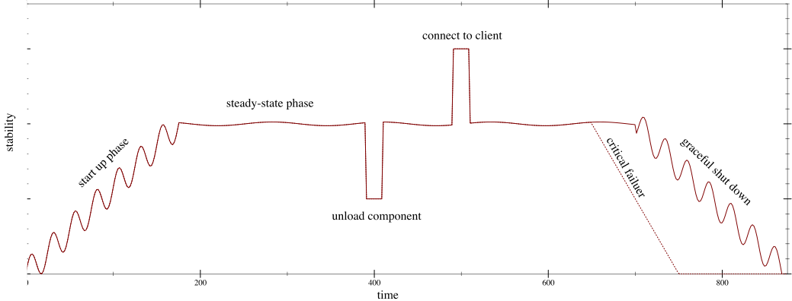
The Abstract View Let’s take a look at each phase of a typical software system run, while thinking some of the systems you have already used: a web browser, an IDE, or perhaps an networked game. When launched, a system configures itself according to instructions from the command-line and/or a configuration file. During this configuration process, the system loads components, components initialize themselves according to configuration parameters, and one component will pass configuration information to others.
While this setting-up process lasts, the system goes through a period of instability. Components may become available in a concurrent manner, meaning the order in which they are loaded or connected is unpredictable. Hence, any individual component cannot assume that the services of some other component are available when it starts up. Once the configuration is completed, the system transitions to steady-state processing.
In this steady state, it responds to requests from the outside. A request
typically triggers the execution of some service—
In such a multi-component system, some services are critical and some are optional. A component is critical if a failure in the component implies that the system can’t deliver a response to an external request that the context considers absolutely necessary. A component is optional if its externally visible effects are of a low-priority nature.
when a critical component fails, a software system should probably shut down, ideally gracefully;
when an optional component fails, the system may recover by unloading this component or working around it.
Exercise 2. People have come to expect the fault-free, continuous execution of some software systems, for example, the phone network or the internet. But even these systems suffer from problems on occasion. Their reliability is thus measured in “the number of nines.” For example, “five nines” means the system is up and running 99.999% of the time, and that it may be down for less than 0.001% of the time. Calculate what these percentages means for one month and one year.
Finally, sometimes operators must take down a software system. When a software system receives the request to shut down, it must do so in an orderly manner. It should save any data it may need for a re-start. It should disconnect from external systems properly, which may mean unloading components. It should terminate any external processes that it launched. Generally speaking, it should release its resources. Modern operating systems properly manage resources, but some software systems must run on impoverished platforms. Like the start-up phase, the shut-down phase may induce some instability, and it is thus imperative that the system no longer response to requests during this phase.
Any interesting software system comes with a start-up configuration.
During the start-up phase, a software system loads and configures components according to the given information. It may be unstable during this phase.
Once the execution of a system enters its steady-state phase, external requests call for the execution of services and responses. A request may also result in the loading or unloading of components, again a period of potential instability.
- Due to bugs, multi-component systems may experience failures, some partial and some total. Planning and developing a system must take into account failure and options for how to react to them:
The failure of an optional component must not tear down the entire system.
In the case of a failure of a critical component, a software system should shut down gracefully.
While a system deals with failures, it should not respond to external requests; it would be too easy for things to go wrong. Systems must also be prepared for an orderly, expected shut-down.
A Concrete Example The above overview is quite abstract. It demands a concrete example and an illustrations of these points.
Every reader is familiar with IDEs, interactive development environments. These
IDEs are software systems in the sense of the five bullets. When a typical IDE
starts up, it consults its configuration file or directory, where it stores
information such as language modes, recently visited files, positions within
files, and much more. If the IDE is directed to open a file for which a
language mode doesn’t exist yet, the services for parsing and syntax-painting
the code aren’t available—
Once the IDE is up and running, a developer can edit the code, query it, refactor pieces, run tests, and so on. A bug in the parsing tool or language server will not tear down the IDE; instead the IDE will signal that there is a problem and ask the developer how to proceed. On the other hand, if the IDE code itself has a bug, the developer may have to “kill” the IDE process and restart it. But even in this bad scenario, the IDE won’t let down its user. It will have stored away enough backup and recovery information that the loss will be tolerable. Finally, a developer is likely to shut down an IDE in the evening and restart it in the morning.
Now that we have a common idea of what a software system is and how it runs, we can turn to the next part, namely, the construction of systems.
Exercise 3. How could an IDE become unstable while it is looking to load a language mode (parser, type checker) while a developer is creating code in this language new to the IDE? What if the IDE replaces a language mode with a revised version? Look up the term “hot swapping.”
8 Developing a Complete Software System
How is a software system constructed?
A modern software system consists of many interacting pieces of software. Over time the pieces have been called by different names: component, module, package, plug-in, (micro)service, and more. These names reflect our growing understanding of the nature of software systems plus the advantages and disadvantages of these organizations.
Early on, programmers thought that these components are designed, implemented, linked, and deployed for good, like any other large engineering product, say, a bridge or an airplane. Once a product was deployed, it just needed occasional maintenance action, perhaps a bug fix or a port to a some new hardware.
Now we understand the nature of software differently. People view software as the extremely malleable medium that it is. They want bugs fixed immediately; they want new features added asap; and they don’t have time to wait for the responses of a system. All of this calls for highly responsive developer teams and instantaneous delivery. In short, software construction has become maintenance and maintenance is continuous construction. One key consequence is that developers have to look at existing code quite frequently and reconstruct the thoughts of those who constructed it.
To understand what the construction of a software system looks like, this
section presents the imaginary scenario of being in charge of a brand-new
project. Some call this situation a “green field” project. Although this
situation is rare, it is idea for getting a sense of how the system’s purpose is
refined; how its components are discovered; how these components are arranged
into a whole; and how developers describe the results of this work. After that,
it’s onward to programming—
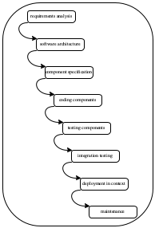
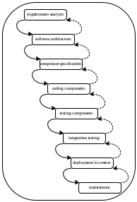
Figure 4: Software development processes: waterfall and spiral
8.1 Ways to Proceed
In the early 1970s, Barry Boehm, one of the first software engineering researchers, wanted to explain the cost of bugs. More specifically, he wanted to understand the relationship between the cost and the time of bug discovery during development. To do so, he first needed a model of development, for which he borrowed a simplified model from ordinary engineering.
Figure 4 (left) shows the essence of Boehm’s process idea, the waterfall model. The engineer starts with a thorough analysis of what the software system is to accomplish, its context, its performance characteristics, and so on. The result is a document of requirements, and it is “thrown over the wall” to specification specialists. Their task is to turn the requirements document into a system specification, often called a software architecture. Once again, the architects hand this document to people who can write down concrete component specifications: interfaces that spell out which functionality is needed and purpose statements for each piece of functionality. From here, the workflow goes to coding, testing, and integration testing until the system is ready to be deployed. The rest is simply called “maintenance.”
Boehm used the diagram to state a simple-minded exponential law of bug cost. If a bug is discovered n phases after its introduction into the development process, its cost is O(10n) (time, resources, money), an amount that covers both the direct damage caused by the bug, the effort of finding the bug’s source, and the labor of eliminating it. Boehm’s paper implies that the model is a strawman, and the number is just a “guestimate.” Nevertheless people tried to follow this waterfall process of developing software, and in principle, its sheer existence is critical because it identifies important intermediate products: requirements; architecture and its components; unit tests and integration tests; deployment documentation; etc.
In 1976, when Boehm consolidated his presentations into a book, he presented a refined variant of this waterfall model of software development: a spiral version. Here “spiral” means that each phase in the workflow diagram of figure 4 (right) is equipped with a backarrow to its predecessor. These backarrows indicate critical feedback, which demands a conversation between the people working on phase n+1 and those working on phase n. In the terminology of Boehm’s book, a component specifier would conduct a thorough review of the software architecture and thus provide feedback for improvements. This conversation continues until the component specifier is satisfied with the architectural specification. In turn, a demand for revisions to the architecture may raise questions about the analysis of the purpose and context of the software system. Generally speaking, the document of phase n is no longer chiseled in stone but a negotiable product, and the negotiations may flow all the way back to the origin.
By 2000, the ideas of agile development and extreme programming changed the landscape of software development even more. Coding is no longer seen as a minor step in the middle but as the beginning-and-end. Testing is tightly integrated with, and drives, the development of code. Due to internet-based delivery of software, deployment and maintenance aren’t separate phases anymore but simply become another element of a tightly knit development-and-feedback cycle.
At first glance, the analysis of requirements and the design of an architecture plan seem to be missing, but these appearances are deceiving. Both are still needed, though they may not play the same role. Without a goal statement and an analysis of this statement, developers don’t know where they are going with their software. So formulating the goal, and analyzing how to get there, is a requirements analysis.
In the same vein, a software system without some architecture cannot exist for a
long time. Like a plan for a home, a software architecture is a blue print and a
guide to the numerous interacting pieces. While a process such as spiral
development develops a draft architecture explicitly and up front, agile and
extreme-programming processes create this understanding over the course of the
creation phase. It may be implicit at first, but when the software development
process is successful, someone will have to describe the architecture explicitly
if the “owner” wishes to maintain the product for the long run—
Reading
Barry W. Boehm. Software engineering. IEEE Transactions on
Computers. 25(12). 1976.—
Kent Beck. Extreme Programming Explained. Addison-Wesley. 1999.—
The Agile Manifesto
Kent Beck, et al. Manifesto for Agile Software Development.
2001.—
8.2 Analysis: Understanding the Project’s Purpose and Context
Although this book is not about software engineering, it is still
important for a student of software development to see how an experienced
developer might conduct a rudimentary analysis—
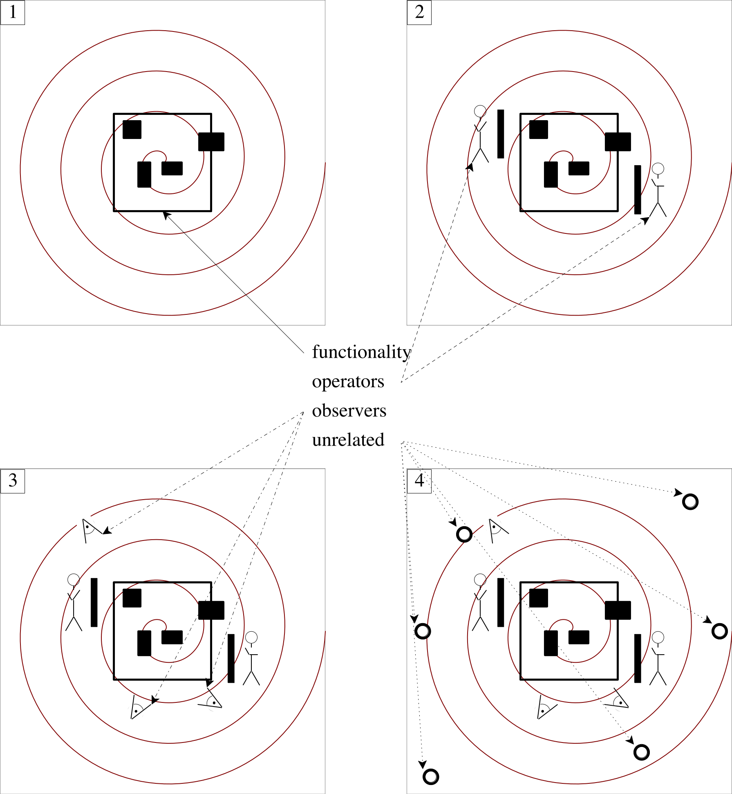
Figure 5: A spiral analysis of an imagined software system and its context
Every project starts with an idea about some piece of functionality that people would like to have implemented as a piece of code. In the beginning, military men needed weapons-related calculations done. Engineers aimed to help with the construction and control of airplanes and space ships. Scientists wished to model the weather. Business people wanted to replace the tedious paper-based bookkeeping with accounting software. Doctors asked for assistance with diagnosing illnesses. Once the world-wide web came about, travel agents lost their jobs to web sites. Drivers ditched their city maps and used web-based navigation systems for trips around town. People also imagined how others might like to share experiences via stories, links, pictures, videos, and so on. The addition of the cell phone brought all these things and many more to our finger tips wherever we went, whenever we requested them.
This short history points to a key insight about software: it never exists in a vacuum. Software entrepreneurs and their developers must understand and keep in mind the context in which the software lives. As a matter of fact, basic development practices alone demand that they investigate this context before they even start.
Diagram 1 in figure 5 illustrates this insight. When someone wishes to build some software, it is common to have an idea that any non-trivial system (the square) will consist of a bunch of components (the black rectangles inside) and that it connects to some context, which actually determines how the software will be used. It is natural to proceed in a spiral-like fashion, outwards from the imagined software system, to explore this context.
As an analyst investigates the very first layer around the software, operators come up; see diagram 2 in figure 5. An operator could be a soldier, a construction worker, an accountant, an engineer, or just someone looking up a friend’s latest dance video. It may not even be a person, but a thermostat, a camera, a light switch, or even some other software system. Whatever it is, it must be able to stimulate the imagined software system so that it responds. This response could affect a person, or it could turn on/off a mechanical device such as a cannon, the injection part of a car engine, a phone’s speaker. Indeed, it may even be a message to some other software system. Let’s call this the stimulus-response layer.
Next an analyst is likely to find passive observers; see diagram 3 in figure 5. These context elements may perceive the existence of the software; they may experience the effects of the system; but they will not directly interact with the software. If the software malfunctions or disappears, some may notice, some may not; some might become unhappy about it; some may welcome it. Consider a software system for designing aircraft wings. The engineers at Boeing will interact with it. By contrast, the pilots know about it and may notice that their new airplane consumes less fuel than the previous model. Similarly, the guests of a restaurant may face TV screens that show some political conversation and most would likely be happy if the systems malfunctioned.
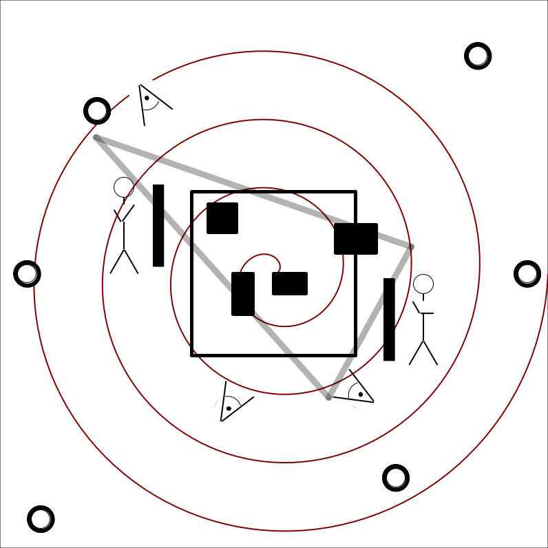
Figure 6: Drawing the boundary between a software system and its context
Finally, when the analysts have explored the context to a sufficiently large distance, they will notice that more and more unrelated concepts show up; see diagram 4 in figure 5. Think of the passengers in the airplane or the air-traffic controllers, none of whom will interact or even consider the wing-design program mentioned above. They all just don’t matter for the product development.
At this point the analysis is concluded and yields two critical pieces: a description of the relevant context and the boundary between the software and its context. Figure 6 makes this point with the triangle that separates the core functionality and its operators-and-observers context. Now is the time to study the results of the analysis so that a developer understands the uses. This step focuses on the operators and how they might interact with the system, that is, the entire path from a stimulus to a response. It also includes the observers and what they may wish (or not) to experience when the software runs. A consultant may also make a plan on how to deploy the finished system and how it will affect the people in its context.
8.3 Synthesis: Discovering Components
Drawing the boundary between an imagined software system and its context is key to figuring out the system’s major components and the role they play. The starting Experienced developers know that this idea generalizes to component creation. point of this step is the set of operators in the context of the system. After identifying them, we need to determine how they stimulate the system; we need to imagine how this stimulus triggers communications among the system’s components; and we need to describe what the response is and which pieces of the context it affects. Software engineers refer to this step as a use-case analysis.
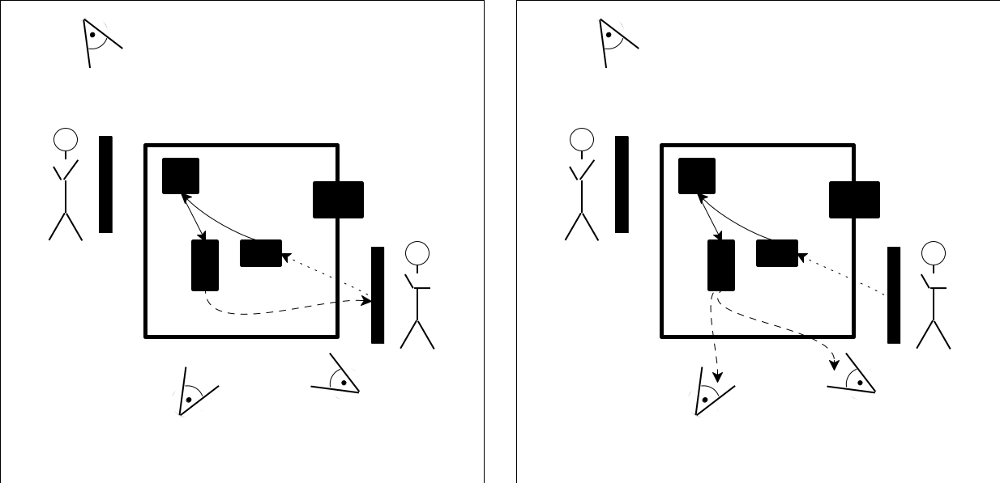
Figure 7 displays two diagrams that illustrate a use-case analysis. The diagram on the left shows how an operator stimulates the system. The stimulus affects one of the system’s components. In turn, stimulating this component triggers an internal event with another component. One way to understand this second step is to think of a shift of the boundary. The active component has become something like an operator, and to get its computation performed, it stimulates another component. From the perspective of a stimulus-response chain, this second stimulus is the response of the first component to the operator’s stimulus. This process continues until the software system is ready to issue a response to its context. In the case of the left diagram this response goes back to the original operator. As the diagram on the right side of figure 7 shows, the response does not have to go back to the operator; instead, it could be a signal to passive observers.
Keep in mind that operators and observers are not necessarily people. An operator could be a sensor, such as a thermometer, combined with an actuator, say, an air condition unit (A/C). A thermometer sends measurements to a software component that checks the measured temperature relative to some preset value. If the measured temperature is above the present value, the software system may request cold air from the A/C. Or, think of a smart phone. It is essentially a large software system that may receive messages from other software systems: a ping from a cell tower, an old-fashioned text messages, notifications from social media, a signal for its clock, and many more. While a ping may demand an acknowledgment from the phone, a signal to the clock should not require a response (though an owner may notice when the clock adjust to a new time zone).
The purpose of a use-case analysis is to discover a system’s essential components. A component typically represents information with data and implements a complete piece of functionality. In a smart home, the software system may come with a control component for configuring the various devices in the home. And, this control component is likely to connect with communication components (drivers), which translates operations from the occupants and sensors into actions. A communication component will interact with actuators in the home, say, music players that send the sound to the speakers in the room where people are or light switches that turn off all light bulbs when everybody has left a room.
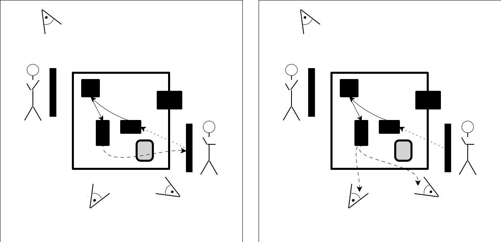
Figure 8 displays the diagrams like those in figure 7 but with an additional. Concretely the diagrams contain a gray-shaded component. The diagram on the left indicates how this component was missing from the stimulus-response path that starts at the operator icon on the right and whose response goes to this very operator. Think of a component that renders an internal data structure into a visual presentation that a person can understand; or imagine the translation of an internal piece of data into a piece of information for an actuator. The diagram on the right in figure 8 shows a use case that shares a prefix of the stimulus-response path with the one on the left. But, the newly discovered component does not become a part of this use case. Generally speaking, every use case deserves its own careful analysis.
the central data structures
Software must represent domain-relevant information with data and (possibly sophisticated) algorithms on this data. And, because of the latter, people have identified programming—
and even software development— with Some of this confusion is still on display during job interviews, though companies are learning that algorithm design skills do not predict socially responsible and cost-effective software development skills. algorithm design for a long time. While this confusion is mostly gone from industry, it is still the case that almost every software project has at its heart a data-structure component that encodes and manages complex information. This data-structure component plays a critical role during the steady phase of an execution, though it may also require special attention during the start-up phase. knowledge about external actors
In addition to representing domain-specific information, a software system must represent information about operators and observers in its context. Since this data representation is unrelated to the central data structure, separating the two into different components satisfies general software development guidelines.
communication with people
All software systems communicates with operators and observers. When these actors are people, the communication proceeds via graphical user interfaces (GUIs). For a long time, the construction of GUIs called for three different, independent components: the model, which relies on the previously mentioned, central data-representation components; the view, which presents data to end-users and provides mechanisms for operators to stimulate the system; and the controller, which connects the two pieces. This arrangement comes with an obvious name: a Model-View-Control architecture; you can search for this arrangement and find lots of information about it.—
While the web and mobile computing have reduced the importance of this separation— due to separation of devices— keeping this architectural arrangement in mind is a good idea. communication with devices and separately operating software systems
If the interaction involves other software systems or devices, the construction depends on two levels of protocols:The “logical” communication between the system and others concerns the timing and the kind of data that needs to be exchanged. It also refers to the correctness of the exchange. This logic should exist in one component.
Another component should be dedicated to the “physical” communication, that is, a component for receiving data from, and sending it to, other actors. It relies on existing protocols, say, the device manufacturer’s specifications or an internet protocol (UDP, TCP, HTTP, and so on). In the second case, the developers of the software systems may even build a protocol on top of the existing ones if they have control over both parties.
Keeping the two forms of communication separate is important and therefore justifies the separation into (at least) two components. Even if the manufacturers of devices update their protocols, the communication logic should probably stay the same for the existing functionality. In other words, repairing the “physical” component should suffice. Similarly, external software systems may undergo maintenance and react to different protocols. Or, a company may decide that switching from TCP to UDP gains enough speed to justify the effort. In both cases, the changes are contained to the physical communication component, not its logic-oriented one.configuration interpretation
The start-up phase of a software system is specified in a configuration, data that may live in a file, at a URI on the internet, and/or come in via the command-line. A software system needs a component that interprets this data, where “interpretation” means initializing components, connecting them, and getting the system ready for steady-state processing.
re-configuration
Software system are dynamic. When an inessential component goes wrong, it is disconnected. Some systems allow the loading of external components during execution so that new pieces of functionality become available; these pieces may not have existed when the system was launched. To monitor this dynamic reconfiguration, a software system may come with a supervisor component, whose task it is to manage loading, connecting, disconnecting, and even unloading components.
This list of examples is by no means exhaustive, but it should help with the important idea of separation of concerns as separation of components. By keeping key pieces of functionality separate, developers provide direct help with the future maintenance. If it turns out that a central data structure is a performance bottleneck, a developer can probably change its internals without changing other parts of the system. Other kinds of changes to functionality can also be isolated to one component or two if different concerns of functionality are allocated to different components.
8.4 Planning: How the Construction Proceeds
The analysis of a software system’s context develops the big picture idea. Here
“big picture” means seeing the system in context—
Proceeding in a top-down fashion is still appropriate when developers perform a use-case analysis to discover the distinct components of the system. The big picture here consists of the essential data representations and the key pieces of functionality. The “drilling down” discovers such details as to the existence of one component may depend on the existence of (functionality in) others. Understanding the exact nature of these dependencies is not yet critical.
turning the component analysis into a development plan.
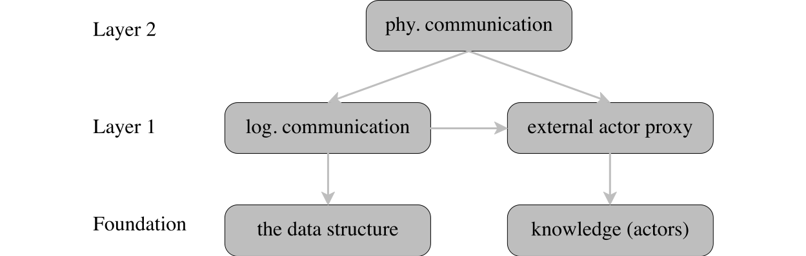
Figure 9 displays a suggestive layering diagram of some of the sample components mentioned in the preceding section. An arrow from A to B should be read as “component A depends on component B.” In this sample arrangement, the foundation comprises the central data structure component and the component that records knowledge about external actors. Layer 1 consists of two components: a component that represents the external actors and another one that implements how to communicate with them. The top layer implements the actual, physical communication, perhaps via a remote-proxy pattern.
Exercise 4. Organize the five components in figure 9 into a linear plan sequence so that a component listed at position n+1 depends only on components 1 through n.
In addition to inter-component dependencies, external constraints also play a role in the composition of a construction plan. For example, the ability to demonstrate a working prototype might dominate other concerns. Consider the development of a software system that may have to rely on interactions with external software systems. A client, a marketing person, a manager, or an investor may be happy to see a prototype that merely implements the logical communication and runs on just a single computer. Depending on the various desired features, this stage can be broken into several smaller ones, too, as long as each of them comes with observably distinct functionalities.
9 Software Architecture
While developers identify the components of a software system, they also develop an idea of how these components relate to each other. Conversely, existing ways of relating components to each other tends to determine a bit how developers identify components and their relationships; on some rare occasions, developers come up with new ways of arranging components or at least variations of existing arrangements. Before we continue, it is therefore necessary to take a look at these preconceptions.
Researchers refer to these established and widely used arrangement of components as software architectures. They coined this phrase to describe an entire field of study. Practicing software architects view the use of (variants of) existing architectures as a way to arrange components so that the overall system is easily understood and effective. In other words, it is a small act of socially responsible development.
Any developer team that grows to a certain size has a dedicated architect, and many developers consider this aspect of software development a sweet spot. Becoming a software architect requires experience and reflection. The former starts with knowing some basic architectures; the latter means having an eye for proper relationships among components.
This section presents three architectures that every developer should know. There are many more, and descriptions can be found in the researchThough be careful, this very literature can lead people to turn into “architecture astronauts.”literature. The notion is also somewhat related to the field of object-oriented design patterns, though as the name says, the latter is focused on a specific class of programming languages (and how to circumnavigate some of their deficiencies).
9.1 Pipelines
The Unix operating system introduced the pipe as a mechanism for composing programs that read their arguments from a standard input device and write their results to a standard output device.
Operationally, the pipe mechanism enables a programmer to turn the standard output device of one program into the input device for a second program. This way the second program can process the output of the first and compute its results from those. A pipeline is a composition of several programs with pipes between them. While the idea sounds simple, it has consistently shown surprising value and has been ported to almost all operating systems.
Figure 10 displays a diagram that illustrates the idea geometrically. Each component consumes an input stream, which contains a number of elements. It also produces an output stream, again a sequence of elements. The shaded elements of the input streams are those that the component has consumed. As the diagram also shows, different components process their input streams at different speeds.
Depending on the relative speeds, one component may have to wait for its predecessor. The pipes-as-streams mechanism smoothly accommodates such differences, because it clearly distinguishes the end of the stream from the situation when the next element is not ready for processing yet.
$ ls -l | grep rkt | wc -l |
15 |
The ls -l command—
$ cat I.scrbl | tr -s '[:space:]' | sort | uniq | head -7 |
0 |
00 |
000 |
A |
ASCII |
Absolutely |
Addison |
This pipeline uses cat to display I.scrbl, the source of part I of this book line by line; breaks it into words; sorts those; eliminates duplicates; and finally displays the first seven words.
9.2 Model, View, Controller
The introduction of graphical user interfaces in the 1970s pointed out the essential difference between the data that a program manages, the way the data is presented to customers, and how the latter interact with this presentation. To realize this separation, a developer at Xerox Parc proposed a three-part architecture: model-view-controller.
Using standard science terminology, the model is the essence, the data
set that the software system manages. A view—
Figure 11 presents the idea as a diagram. An model-view-controller architecture consists of one model component and 2 * n controller and view components. The latter come in pairs, because each view may need its own way of allowing users to interact with the system. The diagram shows that the user understands the data through a view presentation and that any gestures of the end-user are related to the model via a controller for a view. In turn, the model component informs the view of changes to the data display.
The ubiquitous spreadsheet is an early and well-known system that employs the model-view-controller architecture. An end-user enters data and can then request different views of the same data with various gestures: tables, bar charts, pie charts, etc.
Similarly, many modern IDEs make use of the model-view-controller architecture. An IDE may display the full program text or an outline view; it may show a hierarchical project view; and it may allow programmers to interact with the system via a console.
9.3 Client, Server
Another Xerox Parc effort—
A classical client-server arrangement consists of one server program running on a computer and an arbitrary number of client programs, usually but not always running on different computers. Each client interacts only with the server. It sends a request message to the server, asking for some data or for some work to be performed on its behalf. The server sends back a response, the requested piece of data or just an acknowledgment that the work has been performed.
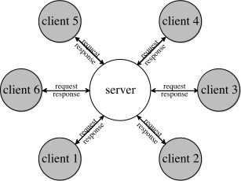
Figure 12 shows an instance of a client-server
architecture, where six different clients are simultaneously interacting with
the server. Here the server sits in a “central” location, indicating that it
should be easily reachable for all expected clients. The double arrows between
the clients and the server—
Every computer user is implicitly familiar with the client-server architecture. The web browser on laptops sends requests to a web server. Simple requests ask for the content of a file, usually with some HTML content, which the browser then renders on the user’s monitor. The response may contain JavaScript programs, which turn the browser window into an interactive graphical user interface. Complex requests demand that the server runs a script that composes the response.
Many apps on people’s mobile devices (phones, watches, cameras) play client to servers. Some are simple software wrappers around web browsers and essentially act as such. Others are genuine graphical user interfaces whose model partially resides on the mobile device and is supplemented by data on a server, which is retrieved via request-response actions.
While the classical client-server architecture typically replies with one response per request, alternative variants exist. For example, a request from a client to a server may initiate an entire conversation, consisting of many back-and-forth messages. Indeed, the server may engage with other clients at the same time, concurrently or sequentially, and the server’s responses may even depend on how other clients react.
Reading
10 A Sample Project: Analysis, Discovery, Planning
Imagine a brand-new startup that wants to engage “hackers.” The founders noticed
that “hackers” are mostly bored on their jobs and complain about the bad habits of
their teammates. So, the founders wants to run servers that host tournaments of
board games, and “hackers” from all over the world will produce automated players
that connect to the servers. These “hackers” will pay a small fee to have their
automated players participate in tournaments, and the winning player (and its
owner) will win a significant prize. The founders are also considering
broadcasting the games to paying subscribers, and like in all unicorn dreams,
these broadcasts could become channels for delivering advertisements—
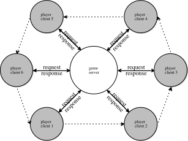
Starting with this description of the idea, a software developer no longer sees
a blank slate but the idea of the client-server architecture in
figure 13. The clients are the automated players; the
server is a game server. Player-clients request to participate in the game, and
the game-server arranges through its responses for the execution of a game. The
architecture differs from the classical one in that (1) the server and the
client exchange a series of messages—
Ticket to Ride is a board game about the railroad barons in the 1800s and how they built train networks. It accommodates four to six players. The central game piece is a map of cities and direct train connections between them. Each connection has a distinct color: "white", "red", "blue", "green"; its length is one of 3, 4, 5.
At the beginning of the game, each player receives some colored cards, which it keeps hidden from the others, and some rails. In addition, a player must choose some destinations (from a small set). A destination is a pair of cities on the game map that must be connected via at least one path (of connections).
Once all players are set up, the game begins. At each turn a player may choose one of three actions: (1) request additional cards; (2) acquire and occupy a connection; or (3) pass. To acquire a connection of color c with n segments, a player must hand over n cards of color c. To occupy it, the player must place a rail on each segment of the connection. Once a player has acquired and occupied a connection, no other players can acquire or occupy it.
When one of the player’s number of rails drops below the smallest number of segments in a connection at the end of its turn, every other player gets to take one more turn. The game also ends if every player has had an opportunity to play a turn and all of them passed.
The player with the most points wins. Each acquired rail segment is worth one point. Each player-chosen city destination is worth 20 points if a player manages to connect the specified places via a path; if a player fails to connect the cities of a chosen destination, 20 points are subtracted from the player’s total. Lastly, the player with the longest continuous path of rail connections receives 20 extra points.
Note To simplify the analysis, discovery, and planning, let’s ignore the financial side of the software system. This side of the business is mostly orthogonal to its core functionality: running games and tournaments.
10.1 Core Idea
The starting point is somewhat clear. While human players tend to manage a game
jointly—
Following tradition, let’s use referee for the component that manages a game. It will have to rely on a representation of the game pieces: the map, the colored cards, the rails, the destinations. Furthermore, it needs to represent what it knows about the participating players so that it can enforce the rules.
Beyond games, the software is also in charge of running tournaments. This task is completely separate from refereeing a game, so a tournament manager is called for.
10.2 Context Analysis
The operators are “hackers” who run automated players. Where these operators exist seems to be unrelated, other than that the company’s interaction with the players must allow for long distances. If the company runs its servers in Seattle and the automated player executes on a computer in Capetown, communication between the two takes longer than the method calls between a “house player” and the game-serving software.
Concerning observers, the company must certainly accommodate its investors. Most
investors do not care about the code—
Outside this circle of operators and observers, an analyst may see sports bars, the parents of a “hacker,” server-machine farms, and many more things. In reality, though, the concepts identified so far describe the software system’s components and its context as much as needed for now. Put differently, the description clearly tells us how to proceed with the development of the core of the software system.
10.3 Component Discovery
The context analysis yields a description of the system’s environment with operators and observers. Imagining these external actors, an analyst plays through key use cases and looks for the components of the clients and server in the imagined architecture of figure 13.
For Ticket to Ride, the analysis has unearthed six components: a tournament manager, a referee plus data representations for the map, the cards, the rails, and the destinations. There are two operators: “hackers” and automated players. At least two kinds of observers are essential: the people who monitor the running system and those who invest in the company before it goes unicorn.
Let’s look at how these external actors interact with the game system, keeping in mind that, like all software systems, the game server starts up, runs tournaments and games, communicates with players, informs observers, deals with failing components, and eventually shuts down.
Launch The “hackers” want to launch their automated players and connect them to the company’s server software. Just stating this much of a purpose raises two questions. The first one is what they connect to. The tournament manager is the only identified component that could even remotely play this role. But then the tournament manager would take on two distinct tasks: managing a tournament of hundreds or thousands or more automated players and signing them up. If the idea takes off, the two tasks might have to be performed concurrently: while a tournament is going on, the next wave of automated players is signing up. That is, this part of the use-case analysis points to a gap in the component identification process. The game system needs one more component, one that signs up automated players and launches tournaments via the manager.
The second question is how the automated player contacts the sign-up component. Since the automated players and the game system will run on two separate computers, choosing a physical, or remote, communication protocol is necessary. The choice will determine how a player connects and how a game server interacts with the players.
Running a Tournament Once enough players are signed up for a tournament, the manager should inform the players to get ready for their first game. Similarly, when the tournament is eventually over, the manager component should let the players know. At a minimum, the winner(s) of the tournament should find out that they won a lot of money.
What this use case immediately points out is the need for a logical communication protocol between server and player. This protocol specifies how the game server and its components contact the players, which information is revealed and as what kind of data it flows from the tournament manager to the player, and what comes back.
Note that this concern is separate from the choice of a physical communication protocol. Since logical ways of communicating is a distinct concern from the transport protocol and the shape of the message, the implementations of these two protocols should exist in separate components.
Running a Game The tournament manager will put instances of the referee component in charge of running games. Like the manager, the referee should inform the players about the start of the game and the end, at least the winners of the game. Furthermore, for the chosen game, the referee should grant players turns, in the round-robin fashion typical for board games. Once again, this use case calls for an extension of the logical communication protocol.
Communication Concerns The preceding two use cases allude to the logical ways of interaction (between the company’s software and the players) and remote communications. Both forms of interaction need rigorous testing before the company runs its first tournament. Testing the logical interactions is different from testing remote interactions; it relies on an implementation of logical players, that is, players that directly interact with the game software without going through any remote-communication protocol. This If you are unfamiliar with design patterns, check out online resources, for example for the remote proxy pattern. observation exposes another oversight in the original list of components. Performing the second kind of test demands an implementation of a bridge between the game server and the logical player; software design principles suggest looking into the remote proxy pattern.
Observing Any observer will want to watch how games progress and how the tournament progresses, two rather different forms of observation.
Watching a tournament is about observing the progress of individual players. Imagine a knock-out tournament in which only the winner(s) of a game may move to the next round. An observer could bet on the tournament rounds, just like people bet on the NCAA March madness tournament or the European Champions League play-offs.
Watching a game publicly calls for visualizing the map and the acquisitions that players make during their turns. Looking over the shoulders’ of a player should be like watching a game but should perhaps reveal the player’s private knowledge. These ideas point to yet another concern: privacy, which, to keep things simple, is ignored here.
All these cases call for different observer components and a communication protocol that sends information from the manager and the referees to the respective observers. The observer components differ from each other, because the visualization and the intended audience differ. Just as with operator interactions, the server-observer communication protocol calls for two layers: a logical layer and a remote layer, if the company wishes to enable observers at distant locations.
Failure All remote interactions between a system and its external agents may fail. Furthermore, all logical interactions may fail due to a bug. Neither kind of failure should bring down the entire system, unless the failure is in a critical component, say, the sign-up server, the tournament manager, or the referee.
Failures in automated players—
game server
tournament manager
player
logical
remote
referee
game pieces (cards, destinations, connection map, rails)
game observer
logical
remote
failure discovery
Likewise, failures in observers should be considered non-critical. While
observers typically do not respond—
Since it is the manager and the referee that communicate with the automated
players and observes, it is those that must discover failures and react. The
reaction may differ from component to component, from protocol to protocol.
Given that failing player components—
The discovery of failures may call for a component in its own right or an enrichment of the communication components. Planning the construction and programming them will show.
10.4 Construction Plan
The process of making a construction plan starts with a listing of all discovered components and how they (might) depend on each other. For the second part, it is best to draw a graph of dependencies. This graph will then suggest layers of the software system and thus a preliminary construction plan. Turning these layers into an actual plan must take into account external constraints.
Figure 14 presents the requested list of discovered components in two columns. The entry for game pieces summarizes the need for four components, each data-representing a piece of information that corresponds to a physical game piece. Both the player component and the observer component interact with the game system at two levels: one for the logical data exchange and one for remote communication.
A close look suggests that the game-pieces components do not depend on anything else in this list, while, for example, the game server depends on almost every other component, directly or indirectly. Similarly, the manager must rely on the referee component to run each of the games in a tournament, meaning the former depends on the latter. Working through the whole list in this manner yields the graph of figure 15.
The figure also shows how this dependency graph naturally yields five layers.
Each layer’s components depend on components in layers below but not on
components in layers above the current one. As before, an arrow points from
component A to component B means A can be developed and
compiled only if B exists—
Simply put, a construction plan arranges this graph in a linear order; technically, any topologically sorted arrangement might do. If a component A depends on B, the latter appears first in the list. Following this plan ensures that each component is properly tested before a developer moves on to components that depend on it. If a bug appears during the construction of a dependent component, the likelihood is high that it is in the component under construction, not those that already exist and are tested. Additionally, it is possible to formulate and run preliminary integration tests that exercise the flow of use cases from the highest layer in the graph to the bottom. Such preliminary integration test often reveal different kinds of bugs than plain unit tests.
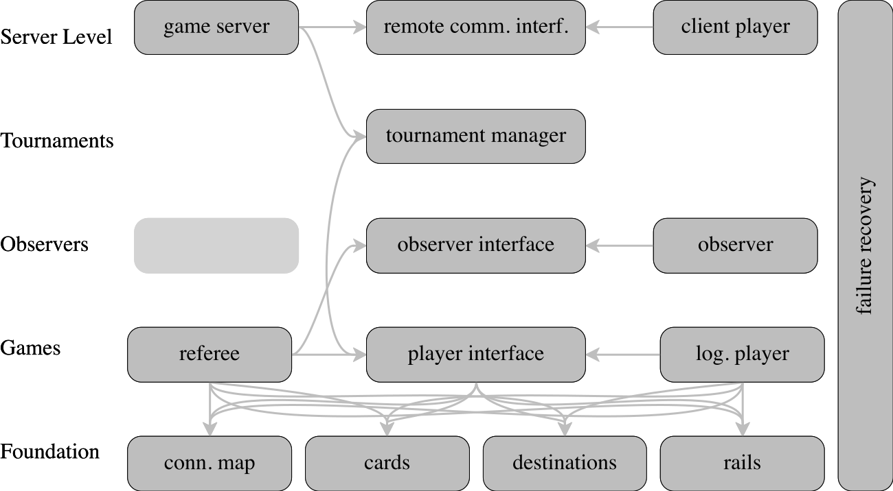
One key improvement over such a simple plan is to take into account external constraints. Examples of important constraints are delivery speed or demo sessions with investors, potential customers, focus groups, and so on. To pick an example for this particular case, an investor might wish to watch an individual game on a single computer to make sure the team is making progress. The next logical step is to run a demo for an entire tournament, again on a single computer. Finally, the investors will wish to see how tournaments are run on a bunch of computers, perhaps all in a single room. Eventually the company must also ascertain that a country-wide or world-wide distribution satisfies basic performance criteria.
In order to reflect these external constraints, the construction will proceed in
three major phases. Each yields a prototype that illustrates progress on the
basic ideas: local games, local tournaments, and remote tournaments. Once these
goals are accomplished, the product will need performance tuning—
the basic game pieces
Of those, the game map is clearly the most complex piece. Both the logical “house” player and the remote-connected players built by the “hackers” and the company’s testers will have to use such a component, but in different ways. The running example demands the representation of a bidirectional graph and certain traversal operations on this graph. Working on the remaining components, especially the player and the referee, is likely to reveal specifics and call for changes.
By implication, a developer has to revisit the game-map component several times during the development of the rest the system. In terms of our social-responsibility terminology, an older version of the developer is going to read the code of a younger self. A “design-it-well” approach is going to pay off for just one developer alone. Now imagine the departure of the original game-map developer during phase 1 and what it takes for a different developer to modify the implementation when it becomes clear that, for example, a player’s strategizing calls for more operations on the map than are available.
the logical player interface
The player interface is one of two central pieces for the company’s goal. It describes how the referee logically interacts with the automated player, meaning it is an interface description. As such it consists of descriptions of data that the referee delivers to players and vice versa. Since the logical interface exists in the same programming language as the referee and player components, it is likely to express this information in terms of method or function signatures for classes or modules, respectively.
Inspecting the player interface in detail is critical. The clients of the company must accept this specification as the logical interface of automated player, and this means the clients must understand what this data means in terms of information about the game. If there is not enough information in the description, the clients will fail to complete games, which will obstruct the company’s goals.
The following sections address this issue in depth, ending in a section on how important a precise, common vocabulary is for all parties.
the logical player and the referee
The referee and player components are independent and symmetric to the player-interface component. In principle, different developers or even developer teams could implement them. The player-interface component dictates how the referee component connects with the player and how the player responds.
the observer interface and an observer
During phase 1, the observer and its interface exist so that the team can demo the software system to people who do not appreciate a code base. Like the player-interface component, the observer-interface dictates how the referee component connects to observers and what the data denotes in terms of the on-going game. It is up to the implementer of the observer component to render this information in a meaningful and quickly comprehensible manner.
In the long term, the observer interface may play the same kind of role as the player interface. The company may allow outsiders to implement observers, perhaps for a fee.
The tournament manager implements the functionality that allocates players to games, run games using referees, promotes some players while designating some as tournament drop-outs, and so on.
This description suggests that the team or the company must settle on the form of tournament they wish to organize. In the real world, tournaments often use one of two modes: round robin, pitching every player against every other player in some form, or a play-off format, filtering out winners in one round and moving them to the next. Some tournaments, like the World Cup, mix the two, starting with a round-robin format and switching to play-off style later.
In some way, this refinement implies that the analysis of this system layer is superficial. Perhaps the tournament manager should employ auxiliary components for allocating players and referees to games and for managing the games from the beginning to the end.
Beyond these considerations, thinking about the tasks of the manager also clarifies that it will have to communicate with the players directly. It may, for example, inform the participating players that a tournament has started, that they will participate in a particular game, or that they won the big prize. In short, the development of the tournament manager will likely require changes to the player interface description. As always, a well-designed interface is easier to change than one that is ad hoc.
As at the end of phase 2, the company might wish to demonstrate the product
again. While the tournament still runs on a single computer, an investor could
observe it—
In general, just thinking about such external constraints at this stage reveals gaps in the analysis and the construction plan. See the next section for how to inspect analyses and plans.
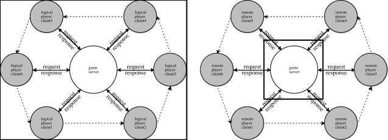
Figure 16: The logical and remove client-server architectures
Phase 3: The Game Server The goal of the third phase is to break up the
monolithic prototype into server-and-client
pieces. Figure 16 contrasts the two view. While the
left side shows the entire logical system running on a single computer—
the remote communication interface
Just like the player-interface component, a developer must plan to write down how external players—
clients— communicate with the software communicates. While the player interface dictates the logic, the remote communication interface fixes the choice of data-exchange language and the format of the data that is exchanged. Creating the remote interface after the player interface has been thoroughly tested and explored logically also reduces the chances that someone must work out cross-cutting fixes to all layers later on. the game server and the client player
Also like the referee and the player, these two pieces are independent and symmetric. Once the remote communication interface describes how the function and method calls of the player interface become long-distance data exchanges, different developers should be able to create those components separately.
The server signs up clients, which implies that the remote protocol specifies the sign-up step. When the server has signed up enough players, it can hand over the players to the tournament manager, because running tournaments is distinct from signing up players.
The client encapsulates a logical player component and connects it to the server. The remote communication protocol dictates how establishing a connection works. When the connection is established, the client code hands control to the player.
For splitting a monolithic system into a client-server one, developers employ the remote proxy pattern. In essence, the pattern explains how to “splice” remote communication components between two logical components that already exist.
Can the developer find problems at this stage with reviews? Does the early discovery of problems help? Are all insights documented in a presentable manner?
11 Inspecting the Plan
Between each of the three steps—
Let’s take a look at what could happen when a planner presents the diagram of figure 15 and the construction plan to his development team. The presenters would probably give a brief summary of the context analysis and then move to the diagram as the result of the component discovery. Most of the time would be spent on the construction plan, simply because the team is about to embark on the code developing phase of the project.
This brings us to the second layer from the bottom in our diagram (figure 15), the first interesting one. | The one that contains the referee, the player interface, and the player? |
Yes, it describes how a player interacts with the referee. | Is it correct to assume that the referee instructs the player to get ready for the game? |
Indeed, we imagine that the interface will specify a method signature that corresponds to setting up the game. | Does this mean the interface will also specify how the referee grants the player a turn? |
Correct, the referee tells a player that it is its turn and expects data that describes what the player wants to do. | Here is what I understand now. The “referee” is a component that manages a game and enforces the rules. |
Absolutely. | Doesn’t this co-mingle two pieces of functionality in one component? |
What do you mean? | The referee seems to be in charge of both managing the mechanics of running a game and making sure the players play by the rules. These could be two major, complex pieces of functionality. |
Now that you say so I think this is right. We may be looking at a component that is relatively large already. And even if the rules are easy to check for this game, in the future we may deal with games that come with complex sets of rules. | Okay. Note this as a possible gap in the construction plan. |
Agreed. Ready to move on? | ... |
Let’s take a break here and reflect on the style and content of this dialog.
The style of the dialog illustrates egoless reviewing. Find all references to the artifacts (plan, components) and re-read the passage. None of them use “how do you check the rules” (or similar language) to discuss what the intended software is supposed to do, what attributes it should possess. Otherwise the participants would identify the creator and the creation, which injects unnecessary personal attributes into the conversation. Inspections of code or designs are not about their creators, only their products. Language reinforces this idea.
The content of this dialog is about a first planning issue. While it is clear that the presenters and the reviewers have discovered a potential problem, think about what kind of problem it is. For code, we think of design flaws and bugs. For pre-code designs, it is better to think in terms of “looking ahead” vs. “needed now” or about a component’s size and functionality versus functionality that is not at all allocated to a specific component. The discovery of a possibly overly complex component is the analog of a design flaw, and it is sometimes premature to address such issues at this stage. The discovery of a missing functionality allocation is definitely something that the team must incorporate into its work schedule as soon as possible.
... | Can we take a closer look at the player interface? |
Sure. As I said, it specifies the method signatures that a player must implement. | One of the methods should be about taking a turn. A player that takes a turn must know something about other players. How does this work? |
What we have in mind is a RESTful approach. The referee sends the information a player is allowed to know about others when it’s the player’s turn. | Why is this? |
It makes testing the player method easy. | ... |
Note how the creator of the construction plan has something specific in mind already plus a supportive rationale. Still, this design choice deserves an additional discussion at some point; see Interface Inspections, Systematically. For now, let’s resume this inspection.
... | That makes sense. We could call it public game state. |
That’s a great name for it. | But don’t we need a component to represent this information? While we’re at it, doesn’t the referee need a way to know everything about the game state? |
Well, now that I think about it, you’re right. Without complete knowledge, the referee can’t decide whether the actions a player wants to perform are legal. | Good. Let’s take a note that the game state is a component for recording the referee’s knowledge about the current state of the game. |
Yes, we need that, but we also need to get players their knowledge. | The game-state component can come with a method that extracts what a player should know for a turn. |
I am glad we discussed this point, and I like the idea. We should record this relationship in the README file. | Glad we discussed the plan. I’ll take care of updating the README. |
Consider the difference between splitting off the rule checker from the referee
and not having a component for representing the state of the game at all. Both
pieces of functionality—
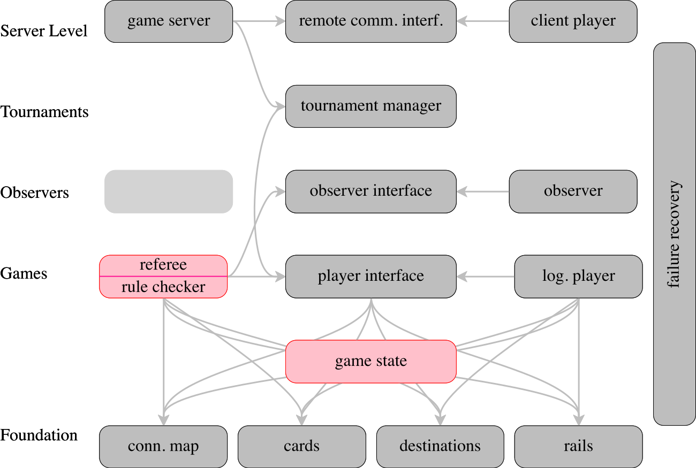
Figure 17 displays a revision of the dependency graph in figure 15, based on the feedback from the plan inspection. The diagram comes with a new layer for the component that represents the game state. It is in the middle between the “Foundation” layer and the “Games” layer. Almost all dependency lines go through this new module box, because it is likely to depend on the entire foundation and both the referee and the logical player component depend on it. Additionally, the referee component is modified to indicate that it may need a separate rule checker functionality.
Exercise 5. Describe at least two methods that the game-state component should implement: their signatures and their purpose statements. Also describe informally how they implement the functionality.
Exercise 6. Read up on the remote-proxy design pattern. Then imagine a dialog that inspects the layer at the top of figure 17 that discovers at least one missing component.
12 Why Inspections Matter Even If There is No Code
Software development includes all steps from the initial conception to its realization as code. This applies equally whether a team works on a brand-new system, the repair of an old legacy system, or just the addition of a new feature.
In the distant past, software engineers insisted that these products had to exist before developers started coding. They had good arguments, but the emergence of (near) continuous software deployment has promoted agile and extreme programming approaches. These approaches push that programming comes first and code is the only “thing” that really exists. This book is agnostic about the two alternatives.
The Purpose In all likelihood, the purpose statement for a system or a feature and a contextual analysis is the result of a negotiation between “marketing” and the leader(s) of the development team. The latter translates the agreement into an actionable task, that is, something developers can actually implement. While a purpose statement should be written down and turned into a one-line slogan, the result of a contextual analysis may exist only in the heads of the negotiation team.
A clear purpose statement for software systems and their features, like the one in A Sample Project: Analysis, Discovery, Planning, helps the developer team focus. The leader and the team members can evaluate every new feature request with respect to the overarching purpose. If it doesn’t (seem to) fit, the statement should help the leader start a renegotiation process and articulate arguments in support of the changes.
Writing down the results of a contextual analysis—
The Plan A dependency diagram—
Every new team member is going to welcome a dependency diagram. Imagine yourself joining a team, being assigned a feature ticket, and staring at dozens of files and modules in the code base. Where to begin. A dependency diagram, such as the one in figure 15, will greatly facilitate the navigation of the code. If the components come with short purpose statements, a new team member can quickly hone in on the places where code has to be adapted or added. By using the relationships, a maintainer can also inspect functionality in use contexts, which may explain oddities in the implementations of some piece of functionality.
12.1 Documents: Start the README, Before the Coding Begins
its purpose and its context;
its major components plus their dependencies; and
a plan for building these components and its major stages.
These steps may have taken place in informal manner, with conversations near
white boards in a meeting room, using napkins in a coffee shop, or some other
form like that. In some settings—
Once the repository is created, it makes sense to add a document that guides future readers through its files. In many cases, people call this document a
README file
and the joke is that this file is the best place to hide secrets. The problem with such read-me files is that they are often an after-thought. Someone may remember late in the creation process that such a document should exist, and it is compiled in a rushed manner, yielding an incomplete and possibly uninformative content. If such a file is created at the very beginning, is thought of as a guide to the project, and is updated regularly, it may just help future maintainers understand the big picture behind the project, its pieces, and their relationships.
Once someone has performed a context analysis, identified components, created a
construction plan, and documented this all in a README file (or several), it is
time to tackle what most developers think is the key task—
Exercise 7. Distill the sample project from the preceding section into a README file. It is okay to take pictures of the diagram in this book, but use your own words to describe what’s going on.